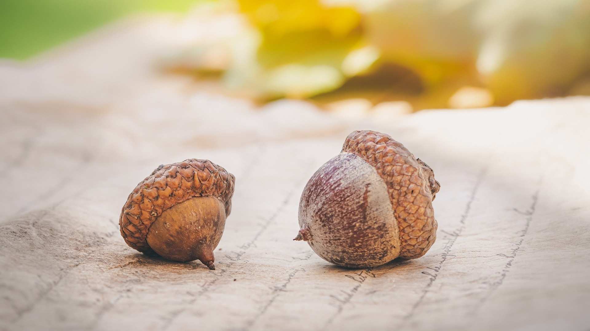
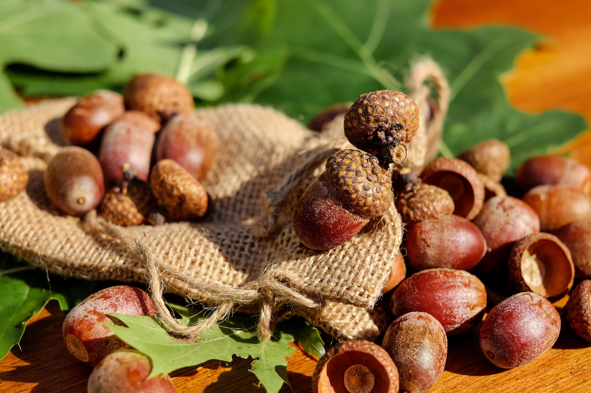

This Autumn, We Collect Acorns
 I used to really hate the fall. The disappearing light, the cooler days, and the turning inward would bring lots of anxiety, fear of change, and some Seasonal Affective Disorder.
I find that it is also a time of extreme nesting for me - I mirror the ways that the squirrels collect nuts and store them for the cooler days of winter. Like the squirrels, I feel that I have so much to do before the cold arrives, and I need to collect all the things important to me. In the past, this would remind me of time passing, and with that, an intense feeling of grief.
Since having my daughter, this has completely flipped for me. It is the first fall where we can really celebrate the changing of the seasons together. We are decorating the house, placing mini pumpkins on every surface that looks nice, and collecting acorns. I have loved showing her that acorns are seeds, and with lots of love and care, they will grow into big, beautiful, and wise trees. We have been collecting them together - on our walks, in our yard, and whenever we go on out-of-town adventures.
As crazy as it seems, part of why I had so much grief in the years before this one was because I was missing her even before she was born. And now that she is in my life, we are celebrating spending time together, creating new memories and preparing for the cozy days ahead.